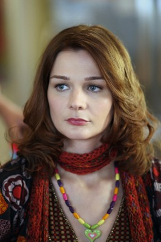
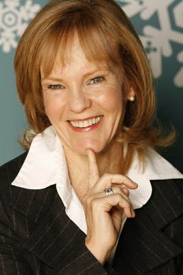

#871 E-m@il für Dich
Alternativ: You've Got Mail

 IMDB-Wertung: 6.6 / 10
IMDB-Wertung: 6.6 / 10  Metascore: 57
Metascore: 57 
Als Besitzerin eines kleinen Buchladens hat Kathleen ein glasklares Feindbild: Joe Fox, den Erben der großen Fox-Buchladen-Kette, deren neueste Filiale sie in die Pleite zu treiben droht. Trost findet sie im Internet, bei ihrem anonymen Chat-Partner, den sie nur unter dem Kürzel NY152 kennt. Was Kathleen nicht weiß: Hinter NY152 verbirgt sich kein anderer als - Joe Fox!
Jahr: 1998
Dauer: 119 Minuten
FSK: 6
Land: USA Studio: Warner Bros.Tonspuren: DD5.1 - ,
Untertitel:
Auflösung: 1080p (1920x1072) Größe: 8990 MB
Genre: Komödie, Drama, Liebe
Regisseur: Nora Ephron
Drehbuch: Miklós László, Nora Ephron, Delia Ephron
Soundtrack: George Fenton
Darsteller:
 Tom Hanks als Joe Fox
Tom Hanks als Joe Fox Meg Ryan als Kathleen Kelly
Meg Ryan als Kathleen Kelly Greg Kinnear als Frank Navasky
Greg Kinnear als Frank Navasky Parker Posey als Patricia Eden
Parker Posey als Patricia Eden- Jean Stapleton als Birdie Conrad
 Steve Zahn als George Pappas
Steve Zahn als George Pappas-  Heather Burns als Christina Plutzker
 Dave Chappelle als Kevin Jackson
Dave Chappelle als Kevin Jackson Dabney Coleman als Nelson Fox
Dabney Coleman als Nelson Fox John Randolph als Schuyler Fox
John Randolph als Schuyler Fox- Hallee Hirsh als Annabelle Fox
- Jeffrey Scaperrotta als Matt Fox
 Cara Seymour als Gillian Quinn
Cara Seymour als Gillian Quinn- Katie Finneran als Maureen, the Nanny
 Michael Badalucco als Charlie
Michael Badalucco als Charlie-  Deborah Rush als Veronica Grant
 Veanne Cox als Miranda Margulies
Veanne Cox als Miranda Margulies- Sara Ramirez als Rose, Zabars Cashier
- Reiko Aylesworth als Thanksgiving Guest
- Katie Sagona als Young Kathleen Kelly
- Kathryn Meisle als Cecilia Kelly
- Michelle Blakely als Shopper
- Julie Galdieri als Shopper
 Chris Messina als Fox Salesperson
Chris Messina als Fox Salesperson- Ronobir Lahiri als Man at Cafe Lalo
- André Sogliuzzo als Waiter at Lalo
- Nicole Bernadette als Florist
- Cecelia Antoinette als Restaurant Patron , uncredited
- Jason Cicardo als Party Guest , uncredited
- Alfonso Gomez-Rejon als Party Guest , uncredited
- Gideon Jacobs als Young Joe Fox , uncredited
- Antonio Robles als Student , uncredited
- Bruce Jay Friedman als Vince Mancini
- Howard Spiegel als Henry, Zabars Shopper
- Diane Sokolow als Zabars Shopper
- Julie Kass als Zabars Shopper
- Nina Zoie Lam als T.V. Reporter
- Maggie Murphy als Theater Patron
- Meredith White als Shopper
- Dianne Dreyer als Shopper
- Leila Nichols als Shopper
- Mary A. Kelly als Fox Books Shopper
- Peter A. Mian als Capeman
- Richard Cohen als Starbucks Customer
- Enzo Angileri als Starbucks Customer
- Nick Brown als Juggler
- Ann Fleuchaus als Sarah Mancini
- Neil Bonin als Party Guest
- Bill McHugh als Party Guest
- Santiago Quinones als Decorator
Datei: X:\1998\E-m@il für Dich (1998, FSK6, 1920x1072).mkv seit 10.04.2015
Festplatte: HD 1996-2002
 Es gibt insgesamt 86 Filme in der Gruppe '1998'
Es gibt insgesamt 86 Filme in der Gruppe '1998'